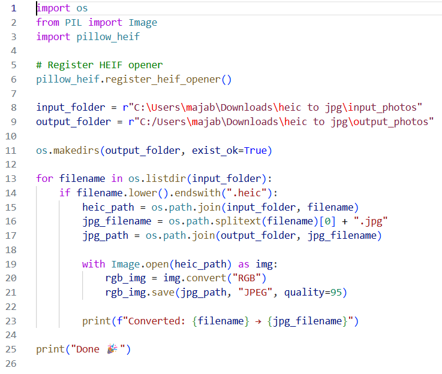

Skrypt automatyzujący napisany w Pythonie, umożliwiający konwersję wielu obrazów w formacie HEIC do formatu JPEG w ramach jednej operacji wsadowej.
Aplikacja przetwarza wszystkie pliki HEIC znajdujące się w określonym folderze wejściowym, konwertuje obrazy do przestrzeni barw RGB, a następnie eksportuje je jako pliki JPEG wysokiej jakości do osobnego folderu wyjściowego.
Główne funkcjonalności:Uproszczenie konwersji formatów obrazów z wykorzystaniem automatyzacji w Pythonie, ograniczenie powtarzalnej pracy manualnej oraz zwiększenie efektywności codziennych procesów.
